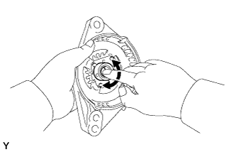
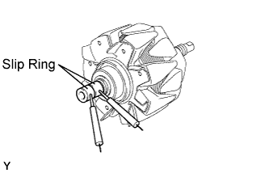
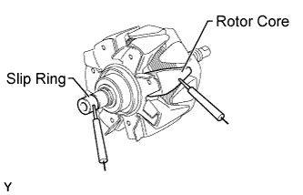
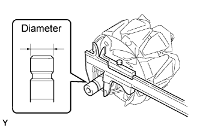
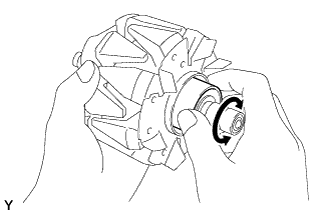
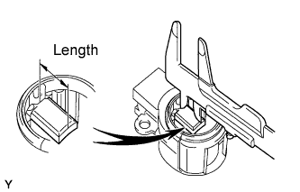

GENERATOR > INSPECTION |
| 1. INSPECT GENERATOR DRIVE END FRAME BEARING |
 |
Rotate the bearing and check that there is no abnormal noise and that it rotates smoothly.
If necessary, replace the bearing (Click here).
| 2. INSPECT GENERATOR ROTOR ASSEMBLY |
 |
Check the rotor for an open circuit.
Measure the resistance according to the value(s) in the table below.
| Tester Connection | Condition | Specified Condition |
| Slip ring - Slip ring | 20°C (68°F) | 2.3 to 2.7 Ω |
 |
Check if the rotor is grounded.
Measure the resistance according to the value(s) in the table below.
| Tester Connection | Condition | Specified Condition |
| Slip ring - Rotor | Always | 10 kΩ or higher |
Check that the slip rings are not rough or scored.
If rough or scored, replace the rotor assembly.
 |
Using a vernier caliper, measure the slip ring diameter.
| 3. INSPECT GENERATOR ROTOR BEARING |
 |
Rotate the bearing and check that there is no abnormal noise and that it rotates smoothly.
If necessary, replace the generator rotor assembly.
| 4. INSPECT GENERATOR BRUSH HOLDER ASSEMBLY |
 |
Using a vernier caliper, measure the exposed brush length.